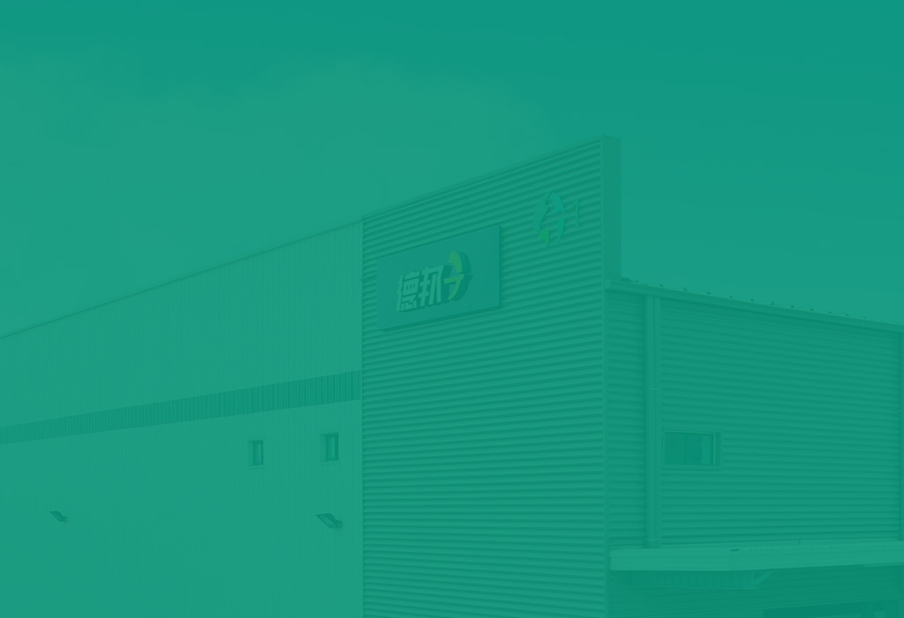
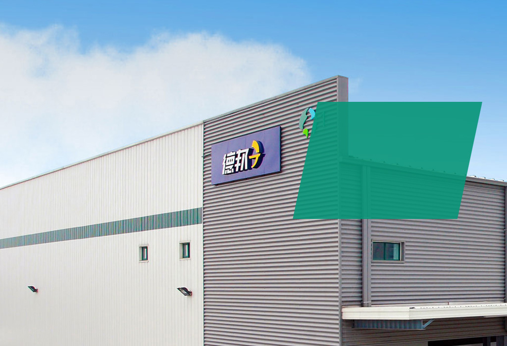

SUSTAINABLE GROWTH
RISING RENTS
We expect significant rent growth over the next four years. We have entered the "sweet spot" of the market cycle. The synchronized improvement we are seeing throughout our portfolio provides real visibility into market conditions. Demand is outpacing supply and is driving vacancy rates below historical lows. Market rents have substantial room to increase, as they remain significantly below replacement-cost-justified rents..
Sustainable Growth
We expect significant rent growth over the next four years. We have entered the "sweet spot" of the market cycle. The synchronized improvement we are seeing throughout our portfolio provides real visibility into market conditions. Demand is outpacing supply and is driving vacancy rates below historical lows. Market rents have substantial room to increase, as they remain significantly below replacement-cost-justified rents.
95.1%
occupied
CREATING VALUE
THROUGH
DEVELOPMENT
SUSTAINABLE GROWTH
CREATING VALUE THROUGH DEVELOPMENT
We want to use our land bank, development expertise and global customer relationships to create substantial value through development. The key to a successful development program is having strategic land control. In this regard, we are in an excellent position. We have the potential to build approximately 200 million square feet of additional space, or about $10 billion in new development, at high incremental returns on capital. We will be prudent with our development, with starts averaging in the $2.5 billion range annually. We expect the value creation potential on this level of starts will average between $300 million and $400 million a year, across the cycle.

$1.8B
of development starts in 2013
EFFICIENCIES
FROM
EXPANDING
SCALE
THROUGH
DEVELOPMENT

SUSTAINABLE GROWTH
EFFICIENCIES FROM
EXPANDING SCALE
Our scale in existing markets allows us to grow with little incremental investment in overhead. Our platform is scaled for profitability, and our assets can grow by at least $10 billion with very small additions to G&A. Our acquisition pipeline is beginning to grow through proprietary opportunities, such as investing in our funds, and as more third-party transactions come to market.
21
operating countries